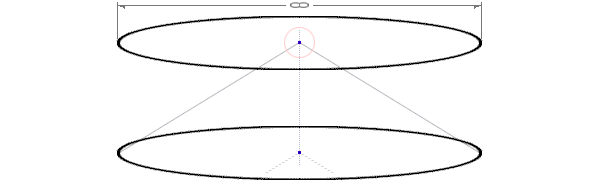

полный текст книги:
Ничто и Точка (предисловие)
Цель
Созерцаемое
Сущность
Сознание
Двухаспектная Сущность
Четвертое измерение и ...
Общество и Человечество
Пятое измерение и ...
Первовозникновение
Акт "Я"
Процесс изучения Акта "Я"
Смысл Бытия
Развитие Сущности
Коллективная реальность
Система развития Сущности
Эхо (отражение)
Реальный аспект Глоб. "Я"
О мировоззрении
Пространство-время
Осношение к Себе
Отношение к своему телу
Лень
Страх
Надежда (Ожидание Чуда)
Адаптация
Тождество личности
Отношение [Рассудок|Тело]
Свобода Воли
Трудная проблема Сознания
Неразличимость и идентичн.
Материя
Гносеология
Эпистемология
Разделение
на главную страницу сайта
— глава шестая —
————————————————————————————
————————————————————————————
ДВУХАСПЕКТНАЯ (ДУАЛИСТИЧНАЯ) СУЩНОСТЬ
Нам предельно понятно и очевидно, как схема устройства механизма созерцания приводит к полной изоляции и блокирует ‘Идею о внешней реальности независимых от «Сознания» объектов’. При этом, мы также понимаем, что речь о невозможности существования физического Мира – такого, каким мы его представляли прежде, но в остальном ничего не меняется, кроме крайне важных (!) эмоциональных психических отношений. Созерцаемое остается прежним. Само по себе, Знание об Устройстве Мира, не может проявлять активность по собственной Воле, и волшебным образом повлиять на закипание воды в чайнике, не растопит лед, не сделает блеклое красивым, и т.д. – это не заклинание. Мы, однако уверены, что этими знаниями можно воспользоваться, но только по желанию и благодаря определенным практикам, о которых здесь речь не идет, потому что Это и Есть сама практика, все остальные, по большей части прочие. Тот, кто сможет осознать Суть, навсегда изменит отношение к Себе, то есть, это подразумевается равным отношением к Миру в целом, к Человечеству, Обществу, и ко всему живому и неживому, включая все ситуации. Это необычное Знание поможет осознать Счастье, полюбить Себя, Мир, Бога, и Всё Абсолютно – без всяких ограничений и исключений;
* * *
Фотоны воздействуют на клетку глаза -> Клетка инициирует сигналы, которые поступают в мозг -> Сигналы обрабатываются, и затем -> «Я» вижу то, что кажется мне внешним. «Я» понимаю, что этот феномен обеспечивается системными особенностями, и является лишь чувственным представлением результатов обработки сигналов – то есть волн, берущих начало у ‘Истоков Моей собственной истории, и измененных опытом до Моего облика’. Мы и прежде знали, что согласно нашей физике, часть сигналов являются электрическими, мы условились их так называть но, Чем они являются на самом деле? - нам это не ведомо; Итак, в процессе этого исследования делаем заключение, что мы находимся, и находились, в ‘изолированном пузыре замкнутого пространства’, которое нам кажется общим, однако, при постижении оказывается индивидуальным;
Вспомним, что мы начали рассуждать с целью изучения механизма, с помощью которого ‘видим прямо сейчас’;
Проведем аналогию результата, то есть – мы в отдельной комнате, и в этих условиях, говорим, что находимся в изоляции, и, направляя указательный палец в сторону глаз произносим, что видим все происходящее в этой комнате, но именно внутри 'Сознания’, тем самым, как-бы еще-раз, снова, погружаемся внутрь Себя. Прежде, мы уже проходили эту практику и понимаем, что представить удастся не каждому, хотя многие уже знают, что после понимания, это окажется слишком просто. Надеемся Вы это освоите;
Конструируя реальность, мы погружаемся внутрь "Я" –> динамично формируя наше «сияющее будущее», с учетом угасающего прошлого, как бы остающегося снаружи. В этом процессе, нам кажется, что мы созерцаем внешний <окружающий нас> Мир. Напоминает поездку на задней площадке последнего вагона, глядя на убегающее вдаль полотно железной дороги. На самом деле, мы созерцаем извлекая новый опыт, как уходящие в прошлое события – самостоятельно выбирая необходимые, эффективные для рационального развития факты и знания, пусть суждение и их квалификация, сугубо субъективны. Обычно вскоре, «новый опыт» оказывается прежним и уже устаревшим, требующим корректировки, дополняясь вновь извлеченными ценными фактами, или на основании предыдущих знаний, либо каких-то особых условий – таким образом формируется новый опыт, и сохраняется в памяти (вместе с ситуацией, которая <вероятно> может пригодиться для тщательного анализа). Это повторяется, снова и снова;
Тем самым, можно констатировать, что любой опыт – используется как часть данных, в качестве основы для извлечения нового опыта. Другой важной частью данных, являются:
a). Идеи «вещей» в их идеальной форме; и
b). Условия, влияющие, как на динамику и изменение всех объектов в контенте конкретной текущей ситуации, так могут влиять и на смысловое изменение самой ситуации;
Потенциал ситуации – это её привлекательность, которая, в свою очередь, отражает степень насыщенности опытом и интерес «Я» (Нужда Сущности) в участии, и намерение проявлять активность в стремлении извлечения нового опыта, до полной иссякаемости. Но, полное извлечение опыта из ситуации абсолютно невозможно (она тоже в принципе бесконечна, в информационном плане), однако, «Сущность» стремится к развитию, поглощая максимум опыта из доступного, но – очень многое зависит от умения эффективно извлекать опыт. Вполне возможна Ситуация наполненная событиями из которой не получается извлечь хоть сколь-то эффективный и рациональный опыт, кроме визуального, хотя для писателя, или художника он может оказаться бесценным – это значит «Сущности» он нужен;
Интерес имеет громадное значение, то есть информация, интересующая «Сущность», как контент содержащийся в потоке данных – является катализатором и энергией для проявления намерения, реализации реальности и форми рования будущих событий. Это невероятно важно для тех, кто учится управлять реальностью (…практик не мало);
Необходимо заострить ваше особое внимание на том, что изменения статичных данных на Глобальном уровне, сохраняющихся как последствия активности «Реального аспекта Я» (если кто-то сдвинул камень, то – он останется сдвинутым), еще не являются надежным доказательством «Коллективной Синхронной Реализации» реальности, но пока мы не обнаружили выраженных предпосылок объяс няющих какие-либо принципы, по которым это было бы возможно, поэтому, до сих пор, мы исследуем ‘Природу’ лишь одного (с позиции каждого) «Реального аспекта Я»;
«Человек – существо социальное». Мы предполагаем, что люди не являются фантомами, именно по этой причине испытываем огромный интерес, и естественную нужду, в обнаружении и исследовании механизма Совместной Реализации Коллективной Реальности. Кроме того, мы хотим выяснить (пусть даже теоретически) существуют ли другие цивилизации, и Глобальные факторы? Могут ли они быть опасны?, или зависимы от намерения, а также и в результате активности, других «Реальных аспектов Я»;
образный шар – диаметр равен бесконечности
(представление, как срез текущего пространства по экватору)
Представим и рассмотрим это как схему на двумерной плоскости бумаги. На рисунке 2, мы практиковали срез бесконечного трехмерного пространства по экватору – это плоский круг, толщиной в одну условную точку (рис. 5). Допустим наше текущее пространство, в центре которого, мы с вами сейчас находимся и рассуждаем об устройстве Мира (через познание механизма созерцания), указывая на переход внутрь Себя, где «Я в теле» участвует в ситуации извлекая данный опыт в созерцаемом фрейме («Я» вижу);
через центр –> внутрь

Рис. 6
(погружение внутрь Себя на один уровень внутрь)
После погружения внутрь Себя, мы вновь находимся в тех же самых условиях, указываем на внутреннее «Я» и на Его внутреннее созерцание. Это погружает нас на еще один – следующий уровень внутрь Себя Самого (см. рис. 6). Мы изобразили эту схему на плоскости, но сосредоточившись понимаем, что это шар с центральной точкой в центре, и данная точка уходит внутрь Себя, то есть, каждого из нас, и оказывается еще одним пространством с центральной точкой внутри (или сравните с «точкой бесконечности»); Вдумайтесь в этот удивительный феномен – данная точка («Я») бесконечна внутри Себя – то есть, ‘Моё? Я' странно ускользает при попытке прикосновения (к Нему). Каждое пространство, при этом, как будто наследует Центр («Я» представляется бездонным, то есть Бездной – в каком-то, но, определенном смысле). Мы способны проделывать эту процедуру сколько угодно раз. Результат будет одинаков. Следует заметить – данные используют поток фотонов, как транспорт -> влетая внутрь «Я», однако, созерцаемое ‘заполняет’ реализуемое пространство именно снаружи, из прошлого. Будущее формируется из прошлого (!) …
Это говорит о том, что данные поступают в память через некую «Ось Я», через Сознание и Рассудок (мы называли это процессом обработки сигнала), интерпретируются и квалифицируются преобразуясь в чувственные образы, и > заполняют пространство …из-за невидимой грани его пределов. Все это, буквально возникает, появляясь в виде созерцаемого, будто в гигантском, магическом 3D театре:
∞…–> через центр –> внутрь –> через центр –> внутрь –>…-∞

Рис. 7
(погружение внутрь Себя на два уровня внутрь)
Учитывая, что «Сознание» запредельно и реализует любые пространства, следует пояснить, что многомерность не может быть структурной, или же программной проблемой, так как увеличение мерности имеет даже очень банальную закономерность. Другое дело, мы столкнемся с проблемой представления, а без визуализации не сможем полноценно исследовать (следующие выше) более высокие мерности;
И, тем не менее, на что-то мы окажемся способны. Тогда наши глаза по настоящему откроются и это произойдет скоро, либо очень скоро, но в рамках этого исследования;
Предлагаем вспомнить, либо – обратите внимание, на эту широко известную особенность (закономерность):
Материнские пространства – содержат бесконечное число подчиненных пространств, уступающих числом измерений на единицу.
Нольмерность – Абстрактная Точка;
Одномерность – Прямая линия, стыкуется в одном направлении из бесконечного числа нольмерных точек;
Двухмерность – Плоскость, слагается из бесконечного числа параллельных прямых;
Трехмерность – Объем, складывается из бесконечного числа наложенных <друг на друга> плоскостей;
Четырехмерность* (Уникус) – составляется из бесконечного числа, вложенных, последовательно наследующих центральную точку (снаружи –> внутрь) трехмерных пространств. Unicus [lat] – уникальный, личный;
*Четырехмерность – основное фундаментальное свойство четырехмерной конструкции пространства;
Пятимерность (Генералис) – составляется из бесконечного числа четырехмерностей, с направленными внутрь осями. Generalis [lat] – общий. Для осознания пятимерности необходимо понимание четырехмерности;
По этому методу, мы можем запросто предположить любую мерность, в теории она будет верна, однако нам не представить метод и практическую геометрию, потому что для этого знания необходимо логичное основание, то есть – нужна причина приводящая к пониманию. Пятое измерение (и пятимерность) представить не просто, мы попытаемся объяснить его прежде, а затем уже попробуем изобразить на двумерной плоскости, но сначала давайте посмотрим на Уникус (Unicus). По примерам, которые мы выше разбирали и благодаря представлению мы понимаем что ось четвертого измерения бесконечна и направлена внутрь и наружу. Кроме этого, необходимо понимать, что «Сознание» не имеет ограничений в плане реализации любых мерностей. И «Сознание», и «Глобальный аспект Сущности», как «Причины» – запредельны, и выражены таким способом:
∞+1 и –∞–1
Где ∞+1 запредельное снаружи и является «Сознанием», а -∞-1 запредельное внутри, то есть «Глобальный аспект Я», реализованный с фундаментальной относительностью к <Своей> полной противоположности (в качестве метода и основания бытия) – очень важному «Реальному аспекту Глобального Я». Для понимания четырехмерности, этого вполне достаточно, однако, к этому придется вернуться, иначе столкнемся с естественным барьером рассудка, при исследовании «Коллективной Синхронной Реализации». Следует уяснить что мы рассматриваем общую структуру, но с позиции каждого существа она ничем не отличается;
Вам интересно, В чем же различие «Глобального аспекта Сущности» (то есть, «Глобального аспекта Я», что одно и тоже), и «Реального аспекта Глобального Я»? Пока не время говорить об этом, но для пояснения следует сказать, что: «Глобальный аспект Сущности» – это «Единое Я», то есть Все «Я» – каждого существа в их бесконечном числе, которые определяются в данном отношении как «Не Я», по отношению к Тому, что Есть в реальности и участвует в ситуациях как «Реальный аспект Глобального Я» – в качестве необходимого Баланса противоположностей (мы понимаем относительность равной). Эта относительность является фундаментальной, равнозначна, взаимозависима, и обеспечивается по факту «Системной необходимости»;
читать следующую главу >> << назад